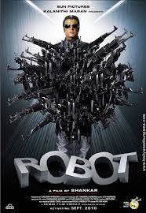
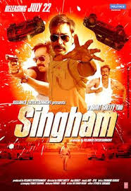

Sanju

- Characters
- Ranbir Kapoor
- Sanjay Dutt
- vicky Kaushal
- Ratings
- The Movie has IMDB ratings of 7.6
3 idiots

3 Idiots is a 2009 Indian Hindi-language coming-of-age comedy-drama film written, edited and directed by Rajkumar Hirani, co-written by Abhijat Joshi and produced by Vidhu Vinod Chopra. Adapted loosely from Chetan Bhagat's novel Five Point Someone,[5] the film stars Aamir Khan, R. Madhavan and Sharman Joshi in the titular roles, marking their reunion three years after Rang De Basanti (2006), while Kareena Kapoor, Boman Irani and Omi Vaidya appear in pivotal roles. Narrated through two parallel dramas, one in the present and the other set ten years in the past, the story follows the friendship of three students at an Indian engineering college and is a satire about the social pressures under the Indian education system.[6][7][8]
Read moreRobot

Enthiran (transl. Robot) is a 2010 Indian Tamil-language science fiction action film co-written and directed by S. Shankar.[13] It is the first installment in the Enthiran film series. The film stars Rajinikanth, who plays a dual role as a scientist and the robot alongside Aishwarya Rai Bachchan in the lead roles with Danny Denzongpa, Santhanam and Karunas in supporting roles. The soundtrack album and background score were composed by A. R. Rahman while the dialogues, cinematography, editing and art direction were handled by Madhan Karky, R. Rathnavelu, Anthony and Sabu Cyril respectively. The story revolves around the struggle of a scientist named Vaseegaran to control his sophisticated android robot named Chitti, after Chitti's software is upgraded to give it the ability to comprehend and exhibit human emotions. The project backfires when Chitti falls in love with Vaseegaran's girlfriend Sana, and is manipulated by Vaseegaran's mentor Bohra into becoming homicidal.
Read moreSingham

Singham is a 2011 Indian Hindi-language action film directed by Rohit Shetty and produced by Reliance Entertainment, based on a script by writers Yunus Sajawal and Farhad-Sajid. It serves as first installment of Shetty's Cop Universe. A remake of the 2010 Tamil Suriya film of the same title by Hari, the film stars Ajay Devgn in the lead role as a police officer named Bajirao Singham alongside Kajal Aggarwal and Prakash Raj who reprises his role as in the original.
Read More